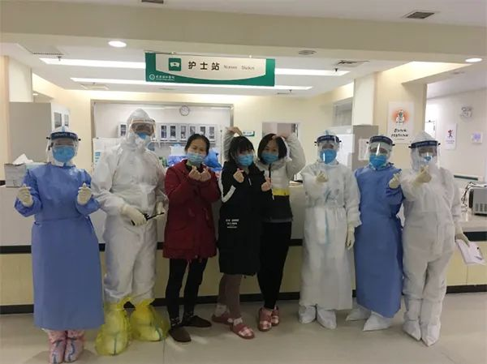

方舱医院如何应对“应收尽收”？华山医院援鄂医疗队总指挥马昕答疑
原文链接 备份链接 方舱医院患者出院还是比较快的，这样周转起来，就可以接收大量的病人，可以做到“应收尽收”。 文 | 黄 祺 13天前，武汉新冠肺炎疫情仿如“暗夜”——社区还有大量感染者未能得到诊断，他们如果得不到及时的治疗，病情很可能 …
澎湃新闻记者 吴怡 通讯员 张阳 刘文琴
3月4日下午，在武汉华中科技大学附属协和医院西院区7楼东区，5名新冠肺炎患者集中出院。澎湃新闻从中山大学孙逸仙纪念医院了解到，该医院第二批支援湖北疫情防控医疗队自2月8日接管重症病区7楼东区以来，已累计治愈出院15人，另有部分患者病情转轻后转院。
医疗队领队、医院党委副书记兼副院长许可慰教授介绍，此次出院的5位患者年龄最大的66岁，最小的33岁。经过抗病毒、中成药和支持治疗后，体温恢复正常3天以上，呼吸道症状明显好转，肺部CT显示炎症明显吸收，连续两次呼吸道病原核酸检测阴性，达到治愈出院标准。
据了解，3月4日出院的5位痊愈患者中，有3位被医护人员称为“方舱三姐妹”。当时7楼东区是为了缓解重症床位不足而紧急新开的重症病区，“方舱三姐妹”由于病情过重，在2月9日凌晨从江汉方舱医院紧急转入，之后就住在同一间病房的81、82、83床。

出院之际，“方舱三姐妹”与医护人员合影。本文均为中山大学孙逸仙纪念医院 供图
在方舱医院的时候，“三姐妹”的情况差不多，都是高烧不退，血氧饱和度也一度掉到85%。“血氧饱和度到了85%就可能会出现呼吸衰竭了，情况是比较危险的。进入病房后我们第一时间进行了氧疗、抗病毒、改善营养、中西医结合治疗等综合治疗方案，三个人的血氧饱和度都很快到了95%以上，治疗效果很好。”病区主任周明根介绍，经过十几天的综合治疗，三人相继停止吸氧，体温逐渐恢复正常，最终达到了出院标准。
出院之际，“三姐妹”在病区护士们自制的心愿墙上写下留言，为医疗队和其他病友加油。“云开雾散，脱下口罩的明天不会远，加油”“我们都是英雄”“早点回家跟家人团圆”……

病区自制心愿墙上的留言
本期编辑 邢潭
推荐阅读


原文链接 备份链接 方舱医院患者出院还是比较快的，这样周转起来，就可以接收大量的病人，可以做到“应收尽收”。 文 | 黄 祺 13天前，武汉新冠肺炎疫情仿如“暗夜”——社区还有大量感染者未能得到诊断，他们如果得不到及时的治疗，病情很可能 …
原文链接 备份链接 澎湃新闻记者 汤琪 2020-03-04 21:46 来源：澎湃新闻 字号 3月4日晚，武汉市江岸方舱医院一名负责人向澎湃新闻（www.thepaper.cn）证实，江岸方舱医院发布了一份《紧急通知》：根据市防疫指挥部 …
原文链接 备份链接 心理医疗队在疫情发生一个多月的时间点来武汉，时机很好，我们希望在疫情还没有结束的应激期，帮助他把焦虑缓解下来，以免造成长期影响。 记者 | 黄 祺 武汉新冠肺炎疫情一个多月后，以精神科专科医生为主要成员的心理医疗队，由 …
原文链接 备份链接 我等待着， 等风雨经过，等我们相见， 你微笑仰望着天， 我们一起种下心愿。 —— 张学友《等风雨经过》 文 / 麦兜妈 公号 / 兜爷麻麻不睡觉 方舱最后的时光 在我19号上篇文章发出时，是我进入方舱的第7天，当时我已 …
原文链接 备份链接 7271 来源：正和岛 作者：叶青 03-01 1、武汉疑似病例降到393例 29日，农历二月初七。阴天。29日，全国新增确诊病例573例，新增死亡病例35例（湖北34例，河南1例），新增疑似病例132例。当日新增治愈 …